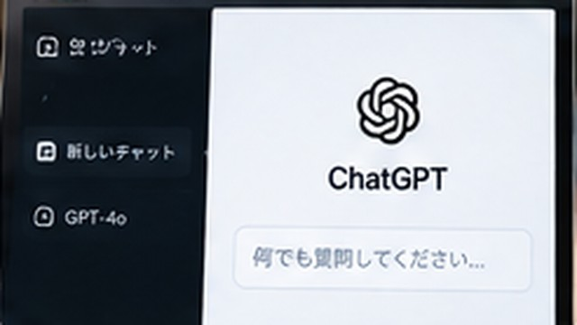

ChatGPTを使うときの注意点｜個人情報・間違った回答などを解説
ChatGPTを使うときに注意したい個人情報、秘密情報、誤った回答、最新情報、著作物などの基本ポイントを解説します。

結論
ChatGPTを使うときは、個人情報や秘密情報を安易に入力しないことと、生成された回答を無条件に正しいと考えないことが重要です。
文章が自然でも、事実の誤り、古い情報、存在しない情報が含まれる可能性があります。重要な内容は公式情報などで確認し、用途に応じて人が最終判断します。
個人情報を安易に入力しない
質問に必要がない氏名、住所、電話番号、メールアドレスなどは入力しないようにします。
他人の個人情報を含む資料を扱う場合も、自分の判断だけで入力せず、利用目的や所属組織のルールを確認してください。
パスワードや秘密情報を入力しない
次のような情報は、質問文へそのまま貼り付けないようにします。
- パスワード
- APIキー
- 秘密鍵
- 認証トークン
- 顧客の機密情報
- 社外秘のデータ
エラー相談では、秘密部分を伏せても原因を調べられる場合があります。
回答には間違いが含まれることがある
ChatGPTは、知らない内容についても自然な文章を生成する場合があります。
存在しない機能名、誤った手順、間違った日付などが含まれる可能性があるため、「詳しく書かれているから正しい」とは判断しないようにします。
最新情報は公式情報を確認する
ソフトウェアの画面、料金、プラン、法律や制度などは変更されます。
ChatGPTの回答と現在の状況が違う場合は、サービス提供元や行政機関など適切な一次情報を確認します。
重要な判断を丸投げしない
医療、法律、金融など影響の大きい分野では、ChatGPTだけで最終判断しないようにします。
情報整理や質問事項の整理に使い、必要に応じて資格を持つ専門家や公式窓口など適切な相手へ確認します。
生成されたコードはテストする
ChatGPTが作ったコードは、そのまま本番環境で実行せず内容を確認します。
ファイル削除、メール送信、データ更新など元に戻しにくい処理では、テストデータやコピー環境で動作を確認してください。
著作物の扱いにも注意する
他人の文章や画像などを利用するときは、ChatGPTへ入力・加工したから自由に使えるようになるわけではありません。
公開・配布・商用利用などを行う場合は、元の素材の権利や利用条件を確認します。
会社や学校のルールを確認する
個人では利用できても、職場や学校ではAIサービスへの情報入力について独自ルールが定められている場合があります。
業務資料や学習課題に使う前に、利用規程や提出ルールを確認します。
まとめ
ChatGPTを安全に使うには、入力する情報と出力された回答の両方を確認する必要があります。秘密情報を入れず、重要な事実は公式情報で確認し、影響の大きい判断や処理には人の確認を残してください。
親記事
ChatGPTとは？何ができる？初心者向けにわかりやすく解説

企業の情報システム・DX推進・マーケティング業務などを経験。PC・Webサービス・業務自動化など、実際に試して分かったことを初心者向けに解説しています。
運営者情報を見る →